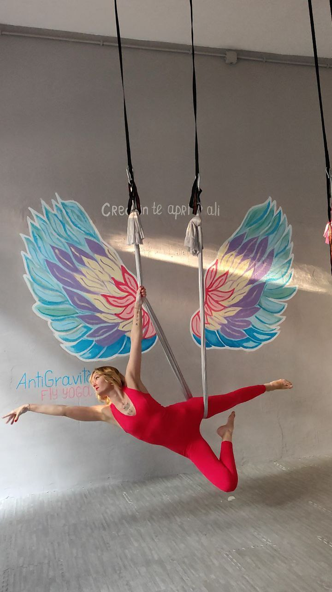
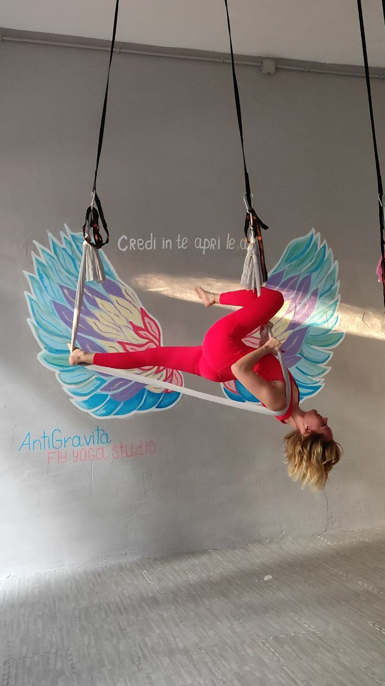
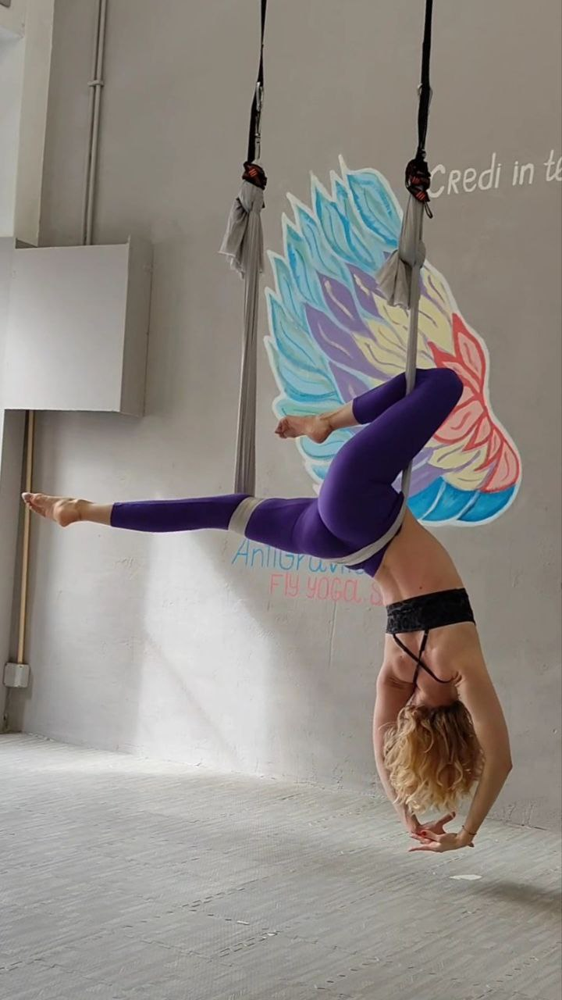
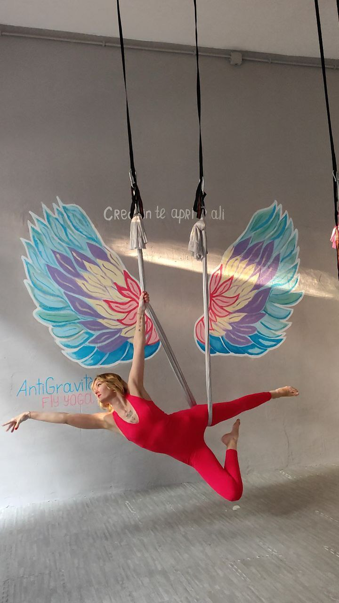
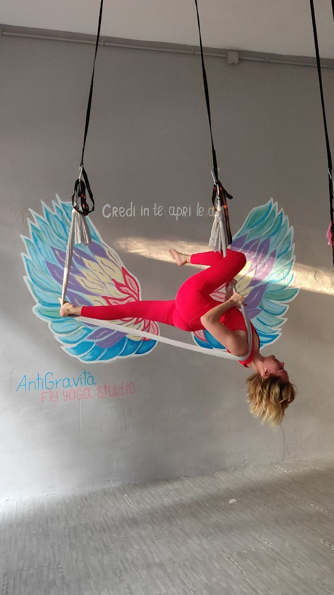
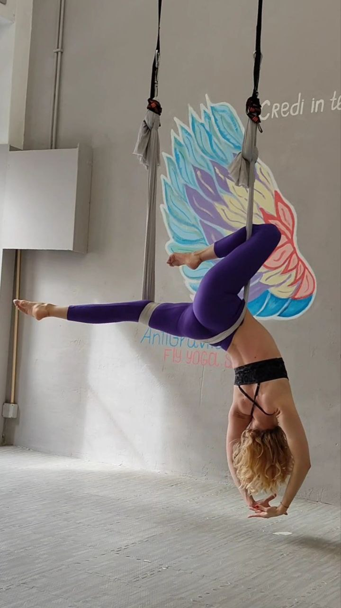

Fly Yoga
Un Viaggio Verso il Benessere Totale
Fly Yoga, o Yoga Antigravitazionale, è una pratica unica che unisce le asana tradizionali dello yoga classico con l'elemento del tessuto sospeso. L'amaca viene utilizzata come strumento di supporto: aiuta a esplorare in sicurezza anche le posizioni più complesse, permette un'immersione più profonda nella pratica e dona una straordinaria sensazione di leggerezza.
Ogni lezione dura 60 minuti e include una pratica completa ed equilibrata: dal riscaldamento dolce alle fasi dinamiche, stretching, posizioni invertite e rilassamento finale.
Alla fine di ogni lezione concludiamo sempre con la Shavasana — la posizione del completo rilassamento. È una parte fondamentale della pratica, in cui corpo e mente assimilano pienamente tutto ciò che è stato vissuto durante la sessione.
La Shavasana si svolge nell'amaca, accompagnata dal suono delle campane tibetane — una terapia sonora che, attraverso le vibrazioni, penetra profondamente nel corpo e calma il sistema nervoso. La pratica si conclude con una breve meditazione, lasciandoti una sensazione di pace, armonia e leggerezza.
Benefici del Fly Yoga per il corpo e la schiena:
- Decompressione naturale della colonna vertebrale: Grazie alle posizioni invertite, la colonna si distende in modo delicato, alleviando le tensioni e la stanchezza.
- Rafforzamento del core e dei muscoli profondi: Durante la pratica vengono attivati i muscoli profondi, l'addome, la schiena e la parte superiore del corpo, creando forza e stabilità.
- Miglioramento della postura e della flessibilità: L'amaca permette di allungare il corpo in modo sicuro ed efficace, aumentando la mobilità articolare e muscolare.
- Accessibilità alle asana complesse: L'amaca funziona come un "portale" o sostegno: aiuta ad accedere a posizioni impegnative anche per chi ha poca esperienza sul tappetino.
- Facilità nell'eseguire posizioni a testa in giù: Posizioni invertite, spesso difficili da eseguire sul tappetino, diventano accessibili grazie al supporto dell'amaca. Sono fondamentali per l'allungamento della colonna, il miglioramento della circolazione e il rilascio della tensione.
- Benessere mentale ed emotivo: Il dondolio dolce, la sensazione di sospensione, la terapia sonora e la meditazione finale riducono lo stress, migliorano il sonno e favoriscono un profondo rilassamento.
Fly Yoga non è solo un allenamento. È un viaggio dentro di sé, un modo per rafforzare il corpo e ritrovare l'equilibrio interiore in un'atmosfera di leggerezza e sostegno.
 




